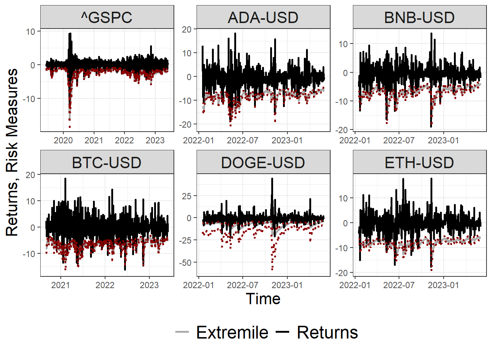

library(tidyverse)
library(quantmod)
library(yfR)
library(kableExtra)
library(PerformanceAnalytics)
library(tsibble)
equity_ticker <- c('^GSPC','EURUSD=X','BTC-USD')
start_date <- ymd("2014-01-01")
end_date <- ymd("2023-06-01")
data <-
yf_get(equity_ticker,start_date,end_date) %>%
select(ref_date,ticker,price_adjusted,ret_adjusted_prices) %>%
rename_with(~ c('date','ticker','price','returns')) %>%
drop_na() %>%
group_by(ticker) %>%
ungroup()Empirical Data
GARCH-based Asymmetric Least Squares Risk Measures
Distribution of risk measures
We calculate the quantiles, expectiles and extremiles from the standard residuals:
First, we compute the risk measures via QMLE at \(\tau =\{1\%,5\%,10\%\}\).
Second, we compute the risk measures via (QMLE) bootstrap at \(\tau =\{1\%,5\%,10\%\}\).
Empirical Data
We collect the
S\&P 500,EUR/USDandBTC/USDdaily price data from January 2014 to July 2023.We calculate all risk measures considering Historical, Parametric and Filtered Historical Simulation.
Bootstrap Confidence Interval
- We calculate the bootstrap confidence interval of all Filtered Historical Simulation risk measures.
Dowside Risk Measures
Bitcoin reached its all-time peak of \(\$67566.83\) on November 08, 2021 and was trading at \(\$15787.28\) on November 21, 2022.
data %>%
ggplot() +
geom_line(aes(x = date, y = price)) +
facet_grid( ticker ~ ., scales = 'free') +
theme_bw()To provide some perspective, figure below compares the historical drawdown of S\&P 500, EUR/USD and BTC/USD. Bitcoin has presented extreme drawdowns (\(83.3\%\)) in contrast to S\&P 500 (\(33.9\%\)) and EUR/USD (\(31.1\%\)).
data %>%
pivot_wider(id_cols = date, names_from = ticker, values_from = returns) %>%
as.xts() %>%
Drawdowns() %>%
as.data.frame() %>%
rownames_to_column(var = 'date') %>%
mutate(date = as_date(date)) %>%
pivot_longer(-date, names_to = 'ticker', values_to = 'drawdown') %>%
ggplot() +
geom_line(aes(x = date, y = drawdown, color = ticker)) +
theme_bw() +
labs(x = 'Date', y = 'Drawdown') +
theme(legend.position = 'bottom',
legend.title = element_blank())
Table below show the maximum drawdown of each ticker.
getSymbols("DGS3MO", src = "FRED")[1] "DGS3MO"prices =
data %>%
pivot_wider(id_cols = date, names_from = ticker, values_from = price) %>%
drop_na() %>%
as.xts()
returns = CalculateReturns(prices, 'log')
T.bill =
DGS3MO %>%
as.data.frame() %>%
rownames_to_column(var = 'date') %>%
mutate(date = as_date(date)) %>%
drop_na() %>%
rename_with(~c('date','rate')) %>%
mutate(rate = rate/100/12) %>%
as.xts()
T.bill = T.bill[zoo::index(returns)]
table.AnnualizedReturns(returns, Rf = T.bill) %>%
bind_rows(table.DownsideRiskRatio(returns, MAR = mean(T.bill))) %>%
bind_rows(table.DownsideRisk(returns, Rf = mean(T.bill))) %>%
as.data.frame() %>%
kable() %>%
kable_styling()| ^GSPC | BTC-USD | EURUSD=X | |
|---|---|---|---|
| Annualized Return | 0.0781 | 0.2630 | -0.0281 |
| Annualized Std Dev | 0.1992 | 0.7741 | 0.0881 |
| Annualized Sharpe (Rf=24.09%) | -0.7675 | -0.0101 | -2.6825 |
| daily downside risk | 0.0097 | 0.0346 | 0.0045 |
| Annualised downside risk | 0.1540 | 0.5492 | 0.0718 |
| Downside potential | 0.0043 | 0.0152 | 0.0026 |
| Omega | 0.8662 | 1.0785 | 0.6010 |
| Sortino ratio | -0.0596 | 0.0345 | -0.2329 |
| Upside potential | 0.0037 | 0.0164 | 0.0016 |
| Upside potential ratio | 0.5756 | 0.6389 | 0.6614 |
| Omega-sharpe ratio | -0.1338 | 0.0785 | -0.3990 |
| Semi Deviation | 0.0094 | 0.0351 | 0.0039 |
| Gain Deviation | 0.0084 | 0.0357 | 0.0037 |
| Loss Deviation | 0.0108 | 0.0388 | 0.0037 |
| Downside Deviation (MAR=210%) | 0.0139 | 0.0381 | 0.0100 |
| Downside Deviation (Rf=24.09%) | 0.0097 | 0.0346 | 0.0045 |
| Downside Deviation (0%) | 0.0093 | 0.0342 | 0.0040 |
| Maximum Drawdown | 0.3610 | 0.8787 | 0.2769 |
| Historical VaR (95%) | -0.0189 | -0.0706 | -0.0083 |
| Historical ES (95%) | -0.0315 | -0.1182 | -0.0126 |
| Modified VaR (95%) | -0.0200 | -0.0756 | -0.0090 |
| Modified ES (95%) | -0.0488 | -0.1497 | -0.0134 |
Codes for replication
QMLE.bootstrap <- function(fit, data, n.bootfit = 999, n.ahead = 1, tau = 0.05, alpha = 0.05){
# initial paarameters
n.bootpred = n.ahead
N = length(data)
set.seed(1)
# ---------------------------------------
# generate paths of equal length to data based on empirical re-sampling of z
# Pascual, Romo and Ruiz (2006) p.2296 equation (5)
fz = as.numeric(residuals(fit))
empz = matrix(0, ncol = n.bootfit, nrow = N)
empz = apply(as.data.frame(1:n.bootfit), 1, FUN=function(i){
sample(fz, N, replace = TRUE)
})
# presigma uses the same starting values as the original fit
# in paper they use alternatively the unconditional long run sigma
# Pascual, Romo and Ruiz (2006) p.2296 equation (5) (P.2296 paragraph 2 "...marginal variance..."
coef = as.numeric(coef(fit))
spec =
ugarchspec(
mean.model = list(armaOrder = c(0, 0), include.mean = FALSE),
variance.model = list(model = 'sGARCH', garchOrder = c(1,1)),
fixed.pars = list(
mu = 0, # our mu (intercept)
ar1 = 0, # our phi_1 (AR(1) parameter of mu_t)
ma1 = 0, # our theta_1 (MA(1) parameter of mu_t)
omega = coef[1], # our alpha_0 (intercept)
alpha1 = coef[2], # our alpha_1 (ARCH(1) parameter of sigma_t^2)
beta1 = coef[3])) # our beta_1 (GARCH(1) parameter of sigma_t^2)
presigma = tail(sqrt(fitted(fit)),1)
prereturns = tail(data, 1)
preresiduals = tail(fz, 1)
paths = ugarchpath(spec,
n.sim = N,
m.sim = n.bootfit,
presigma = presigma,
prereturns = prereturns,
preresiduals = preresiduals,
n.start = 0,
custom.dist = list(name = "sample", distfit = as.matrix(empz)))
fitlist = vector(mode="list", length = n.bootfit)
simseries = fitted(paths)
nx = NCOL(simseries)
# generate path based forecast values
# for each path we generate n.bootpred vectors of resampled data of length n.ahead
# Equation (6) in the PRR paper (again using z from original fit)
#-------------------------------------------------------------------------
fitlist = lapply(as.list(1:nx), FUN = function(i){
fit.boot = garchx(y = as.numeric(simseries[,i]), order = c(1,1))
theta = coef(fit.boot)
df = tibble('ID' = i,
'omega' = theta[1],
'alpha' = theta[2],
'beta' = theta[3],
'epsilon' = data[length(data):1],
'eta' = c(as.numeric(residuals(fit.boot)),NA),
'j' = seq(0,length(data)-1,1),
'sum' = beta^j*(lead(epsilon)^2 - omega/(1-alpha-beta))) %>%
drop_na() %>%
reframe(
ID = unique(ID),
omega = unique(omega),
alpha = unique(alpha),
beta = unique(beta),
epsilon = first(epsilon),
sum = sum(sum),
sigma2.hat = omega + alpha*epsilon^2 + beta*(omega/(1-alpha - beta) + alpha*sum),
extremile.hat = sqrt(sigma2.hat)*extremile(eta, probs = tau),
expectile.hat = sqrt(sigma2.hat)*expectile(eta, probs = tau),
VaR.hat = sqrt(sigma2.hat)*quantile(eta, probs = tau),
ES.hat = sqrt(sigma2.hat)*mean(if_else(eta < quantile(eta, probs = tau),eta,NA),na.rm = TRUE))
return(df)
})
confidence.interval =
fitlist %>%
bind_rows() %>%
select(ID,contains('hat')) %>%
pivot_longer(-ID, names_to = 'measure', values_to = 'estimate') %>%
group_by(measure) %>%
summarise_at(vars(estimate),
.funs = list(lower_bound = ~ quantile(., probs = alpha/2),
upper_bound = ~ quantile(., probs = 1-alpha/2))) %>%
left_join(
tibble(eta = as.numeric(residuals(fit)),
sigma2.hat = as.numeric(predict(fit,n.ahead = 1))) %>%
reframe(
ID = 1,
sigma2.hat = unique(sigma2.hat),
extremile.hat = sqrt(sigma2.hat)*extremile(eta, probs = tau),
expectile.hat = sqrt(sigma2.hat)*expectile(eta, probs = tau),
VaR.hat = sqrt(sigma2.hat)*quantile(eta, probs = tau),
ES.hat = sqrt(sigma2.hat)*mean(if_else(eta < quantile(eta, probs = tau),eta,NA),na.rm = TRUE)) %>%
pivot_longer(-ID,names_to = 'measure', values_to = 'estimate') %>%
select(-ID)) %>%
relocate(measure,lower_bound,estimate,upper_bound)
rm(fitlist)
rm(paths)
gc(verbose = FALSE)
return(confidence.interval)
}